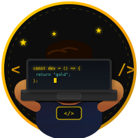

Fleetdriver | Fleetport
Lease auto's vervoerd en logistieke taken uitgevoerd. Contact gehad met grote bedrijven en het bedrijfsleven. Sociale skills ontwikkeld en zelfstandigheid vergroot.
Full stack developer en student Software Engineering aan De Haagse Hogeschool.
Full stack developer met passie voor innovatieve weboplossingen en AI. Python, JavaScript en Machine Learning.

Ik studeer Software Engineering aan de Haagse Hogeschool. Specialisatie in Python, Java, C#, SQL en Machine Learning. Gepassioneerd over het creëren van moderne weboplossingen.
Lease auto's vervoerd en logistieke taken uitgevoerd. Contact gehad met grote bedrijven en het bedrijfsleven. Sociale skills ontwikkeld en zelfstandigheid vergroot.
Verschillende klussen uitgevoerd. Daarnaast websites gemaakt voor vrienden en bekenden als bijzaak.
Opleiding Software Engineering, met focus op praktisch ontwikkelen en moderne technologieën.
Afgerond met bedrijfseconomie en informatica als profiel. Sterke interesse in technologie en programmeren ontwikkeld tijdens deze periode.
Een vraag, idee of project? Stuur een bericht.